Spatial Data Science Conference
Within the wider conference team, I was responsible for the visual design of the event as a complete ecosystem, connecting its identity across the venue, stage, attendee materials, merchandise and every supporting touchpoint.
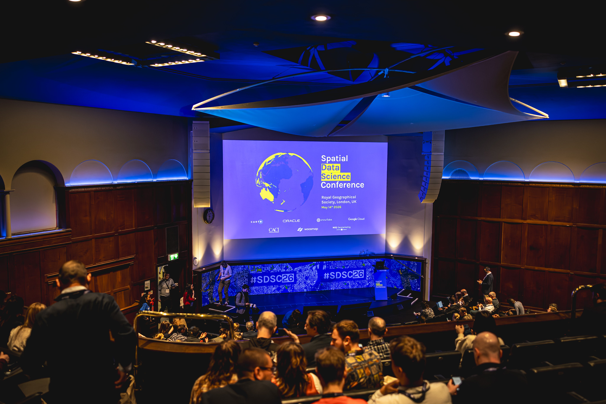
One visual system across every venue
Each edition translated its host city into a map based visual language that could scale from an auditorium stage to the smallest attendee application. Type, color, cartography and modular layouts created a recognizable framework while leaving room for each location and format to feel specific.
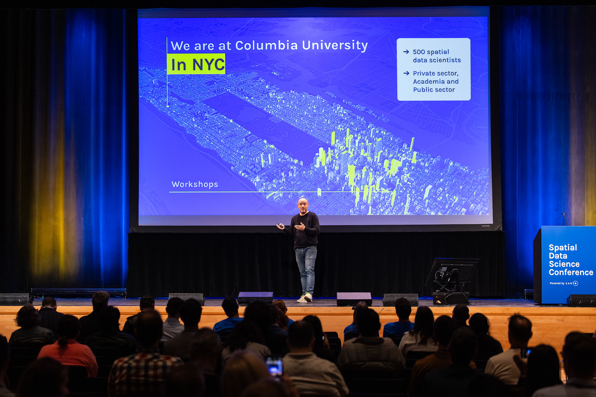
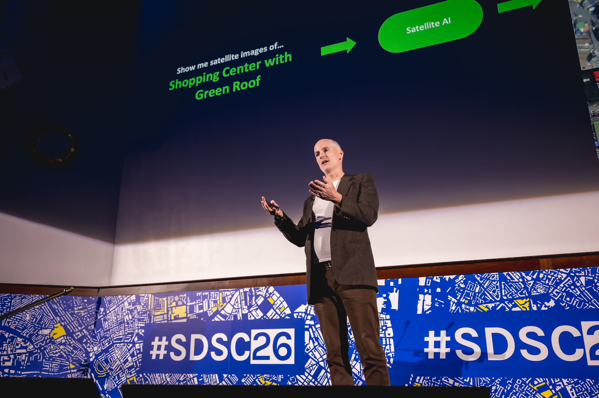
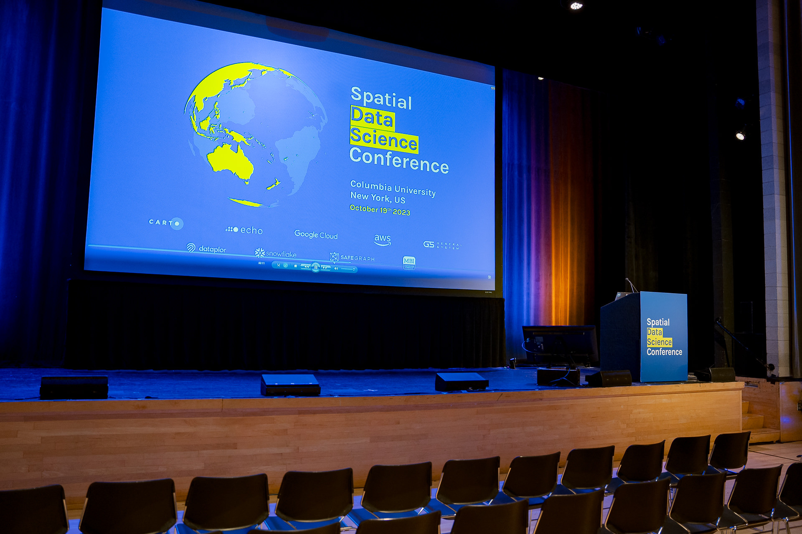
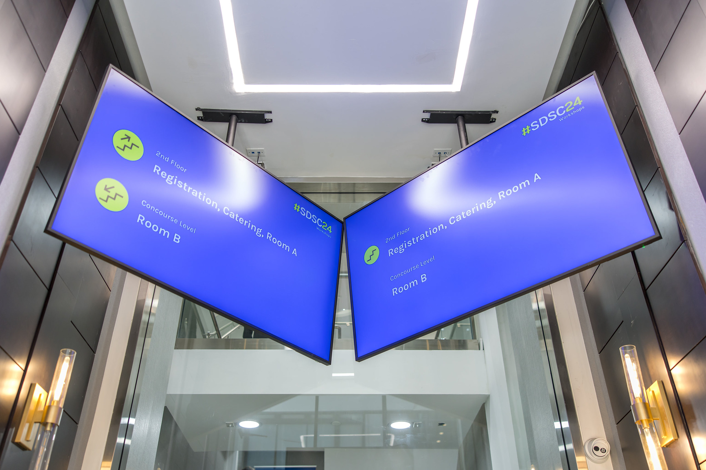
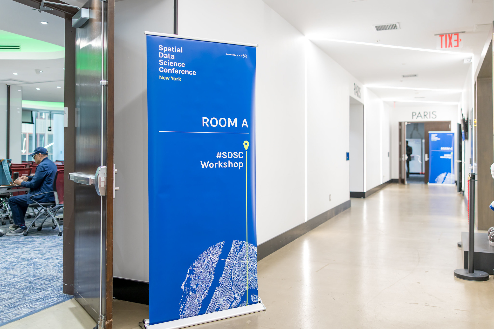
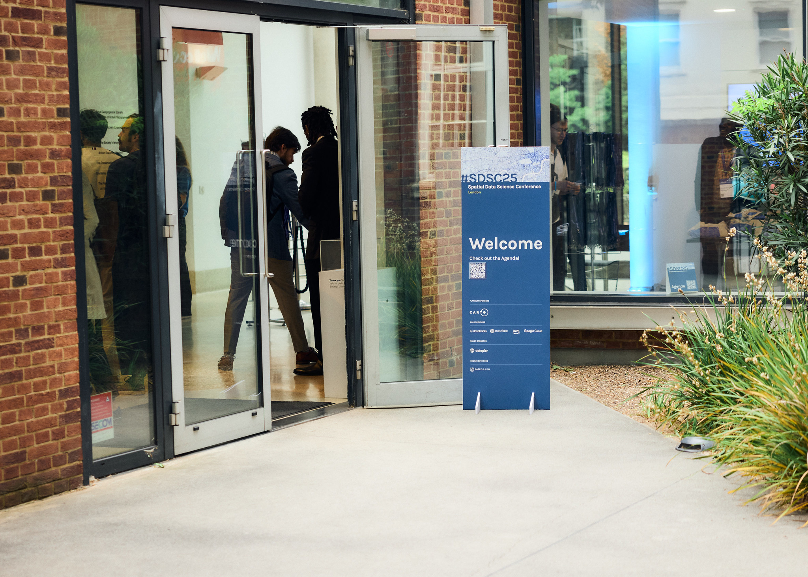
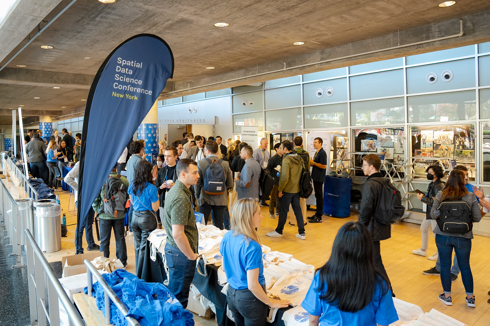
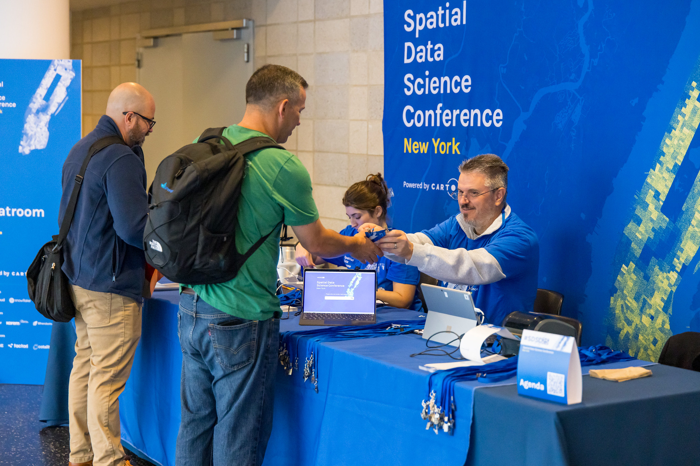
Designed around the attendee journey
The system followed attendees from arrival and registration through directional signage, room screens, stage content and identification. Lanyards, badges, printed materials, T shirts, tote bags, bottles and speaker gifts extended the conference identity into objects people could use and take home.
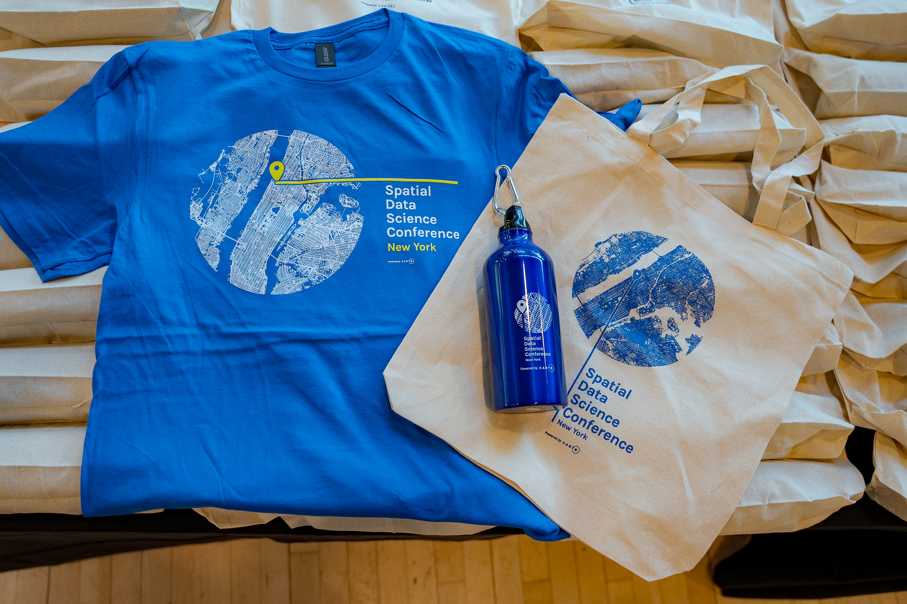
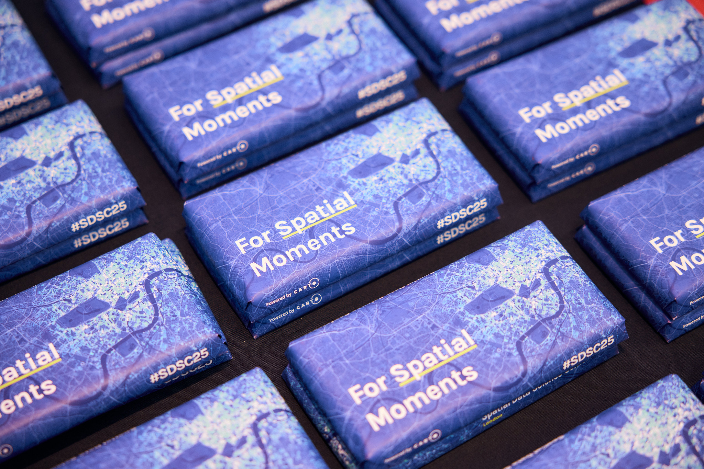
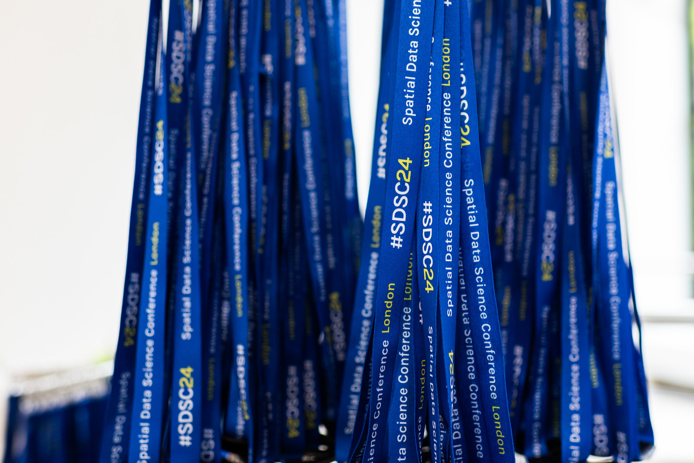
The experience began before conference day
Workshops held the day before the main conference extended the same visual system into a more focused learning environment. Room screens, signage and supporting materials made the workshop program feel connected to the wider event from the first attendee touchpoint.
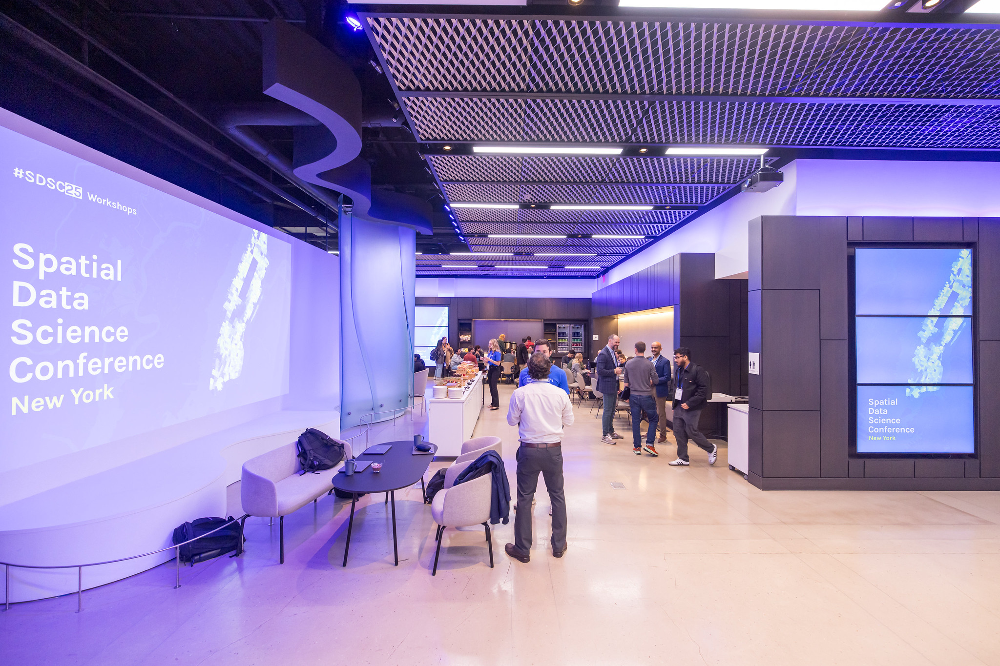